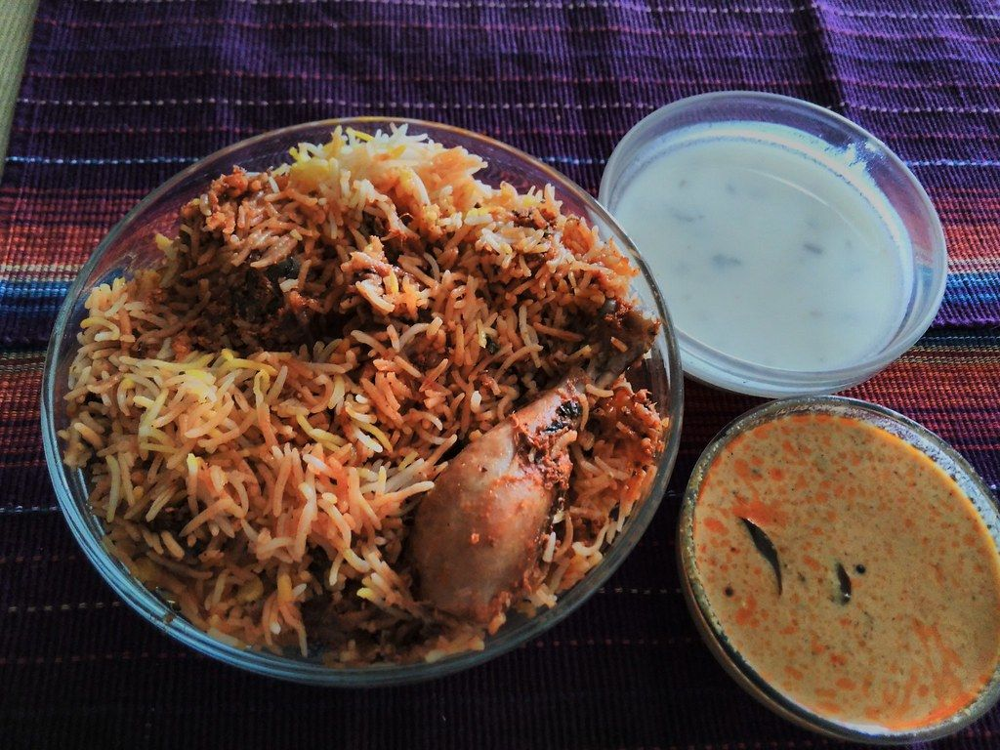

Japanese Cuisine
Authentic Japanese dishes prepared with fresh ingredients and traditional techniques.
Preview made for Katana by adris.tech - not their official website
Japanese dining in Indiranagar. Authentic flavors, warm hospitality.
Katana brings Japanese cuisine to Indiranagar. We serve authentic dishes crafted with care. Visit us for a memorable dining experience.
Authentic Japanese dishes prepared with fresh ingredients and traditional techniques.
Intimate dining spaces available for special occasions and gatherings.
Enjoy our Japanese favorites at home with convenient takeaway and delivery options.
Sample photos - your own photos of Katana go here.

Indiranagar, Bengaluru.
Reach us on +91 96863 48482.
Listed on Eazydiner, Zomato.
Tell us what you need and pick a time.
Indiranagar, Bengaluru
Call ahead for larger groups.
Indiranagar, Bengaluru.
Call +91 96863 48482 or WhatsApp, or email katanablore@gmail.com.
Please call before you visit to confirm today's timings.
Japanese Cuisine, Private Dining, Takeaway & Delivery.
Call +91 96863 48482 or email katanablore@gmail.com to reserve your table.
adris.tech designed it as a free sample. The buttons are switched off while it is a preview. Like it? We can make it your official website - with your own photos, your timings and online booking.